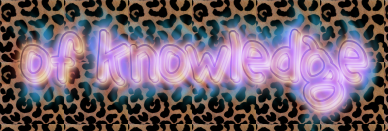

|
 |
 |
 |

|
 |
|

|
 |
 |

|
|||

|
 
|
 |

|
|||

|
 |

|

|

|
||
 |

|

|
 | |||
|
By Laurel Schwulst |
 |
 |
 
|

|
||

|
 |

|
 |

|
For the past handful of years, I’ve been teaching courses about interactive design and the internet.
I teach within art departments at universities, so we learn about the internet’s impact on art—and vice versa—and how technological advance often coincides with artistic development.
In class, we make websites. To do this, we learn the elemental markup and code languages of the web—HTML, CSS, and some JavaScript.
However, sometimes after the semester is over, I receive perplexing emails from students asking, “So how do I actually make a website?”
This sparked my own questioning. “What is a website, anyway?” It’s easy to forget. Today there are millions of ways to make a website, and the abundance is daunting. But at its core, a website is still the same as ever before:
A website is a file or bundle of files living on a server somewhere. A server is a computer that’s always connected to the internet, so that when someone types your URL in, the server will offer up your website. Usually you have to pay for a server. You also have to pay for a domain name, which is an understandable piece of language that points to an IP. An IP is a string of numbers that is an address to your server.
Links (rendered default blue and underlined—they’re the hypertext “HT” in HTML) are the oxygen of the web. Not all websites have links, but all links connect to other webpages, within the same site or elsewhere.
But my students already know this! So when they ask me about actually making a website, they are referring to a website in the world…today.
It’s healthy to acknowledge today’s web is much different than the web many of us grew up using. So when they ask how to make a website (despite having already “learned”), they are alluding to the technological friction and social pressures that often come along with creating and maintaining a website in 2018.
Although they may seem initially accommodating and convenient to their users, universally popular social media sites—like Facebook, Instagram, Snapchat, and Pinterest—are private companies that prioritize advertising above their users’ needs. Their users’ happiness is not the primary focus, so it’s perfectly normal for you to feel anxiety when using or even thinking about social media. In this age of digital cacophony dominated by these platforms, no one is looking out for you… but you. It makes perfect sense, then, when individuals tell me they want their website to do the job of “setting the record straight” on who they are and what they do.
However, clarity is one of many possible intentions for a website. There are other legitimate states of mind capable of communication—a surprising, memorable, monumental, soothing, shocking, unpredictable, radically boring, bizarre, mind-blowing, very quiet and subtle, and/or amazing website could work. You also need not limit yourself to only one website—as perhaps you’d like to confuse or surprise with multiple.
My favorite aspect of websites is their duality: they’re both subject and object at once. In other words, a website creator becomes both author and architect simultaneously. There are endless possibilities as to what a website could be. What kind of room is a website? Or is a website more like a house? A boat? A cloud? A garden? A puddle? Whatever it is, there’s potential for a self-reflexive feedback loop: when you put energy into a website, in turn the website helps form your own identity.


Today more than ever, we need individuals rather than corporations to guide the web’s future. The web is called the web because its vitality depends on just that—an interconnected web of individual nodes breathing life into a vast network. This web needs to actually work for people instead of being powered by a small handful of big corporations—like Facebook/Instagram, Twitter, and Google.
Individuals can steer the web back to its original architecture simply by having a website. I think artists, in particular, could be instrumental in this space—showing the world where the web can go.
Artists excel at creating worlds. They do this first for themselves and then, when they share their work, for others. Of course, world-building means creating everything—not only making things inside the world but also the surrounding world itself—the language, style, rules, and architecture.
This is why websites are so important. They allow the author to create not only works (the “objects”) but also the world (the rooms, the arrangement of rooms, the architecture!). Ideally, the two would inform each other in a virtuous, self-perfecting loop. This can be incredibly nurturing to an artist’s practice.
To those creative people who say “I don’t need a website,” I ask: why not have a personal website that works strategically, in parallel to your other activities? How could a website complement what you already do rather than competing or repeating? How can you make it fun or thought-provoking or (insert desired feeling here) for you? How can the process of making and cultivating a website contribute to your approach?
A website can be anything. It doesn’t (and probably shouldn’t) be an archive of your complete works. That’s going to be dead the moment you publish. A website, or anything interactive, is inherently unfinished. It’s imperfect—maybe sometimes it even has a few bugs. But that’s the beauty of it. Websites are living, temporal spaces. What happens to websites after death, anyway?


What can a website be?
Website as room
In an age of information overload, a room is comforting because it’s finite, often with a specific intended purpose.
Simultaneously, a room can be flexible: you can shift its contents or even include a temporary partition, depending on occasion. You can also position elements in spatial juxtaposition, or create entrances to adjacent rooms through links.
In the early days of The Creative Independent, we sometimes thought of TCI’s website like a house next to a river. We considered the interviews the flowing water, as they were our house’s nutrients and source of life. We would collect and drink from the water every day. But sometimes, depending on its nutrient makeup, the water would change our house. We’d wake up to see a new door where a picture frame once was. Knowledge became the architect.
Like any metaphor, it’s not perfect. For better or worse, it’s much more difficult to delete a building than a website.
Website as shelf
Zooming into this room inside this house, we see a shelf. Maybe a shelf is easier to think about than a whole room. What does one put on a shelf? Books and objects from life? Sure, go ahead. Thankfully there’s nothing too heavy on the shelf, or else it would break. A few small things will do, knowledge-containing or not. Plus, lighter things are easy to change out. Is a book or trinket “so last year?” Move it off the shelf! Consider what surprising juxtapositions you can make on your little shelf.
Website as plant
Plants can’t be rushed. They grow on their own. Your website can be the same way, as long as you pick the right soil, water it (but not too much), and provide adequate sunlight. Plant an idea seed one day and let it gradually grow.
Maybe it will flower after a couple of years. Maybe the next year it’ll bear fruit, if you’re lucky. Fruit could be friends or admiration or money—success comes in many forms. But don’t get too excited or set goals: that’s not the idea here. Like I said, plants can’t be rushed.
Website as garden
Fred Rogers said you can grow ideas in the garden of your mind. Sometimes, once they’re little seedlings and can stand on their own, it helps to plant them outside, in a garden, next to the others.
Gardens have their own ways each season. In the winter, not much might happen, and that’s perfectly fine. You might spend the less active months journaling in your notebook: less output, more stirring around on input. You need both. Plants remind us that life is about balance.
It’s nice to be outside working on your garden, just like it’s nice to quietly sit with your ideas and place them onto separate pages.
Website as puddle
A website could also be a puddle. A puddle is a temporary collection of rainwater. They usually appear after rainstorms. Like a storm, creating a website can happen in a burst. Sometimes it’s nice to have a few bursts/storms of creating a website, since the zone can be so elusive. Some people even call rain “computer weather.”
There is also no state of “completeness” to a website, like a puddle, since they’re ephemeral by nature. Sometimes they can be very big and reflective. Despite their temporal nature, I’ve even seen some creatures thrive in puddles. Meanwhile, some smaller puddles may only last a day.
Not everything, even the most beautiful puddle with its incredible reflective surface, needs to last long. If the world doesn’t end tomorrow, there will be another storm. And where there’s a hole, a puddle will appear again.
Puddles evaporate slowly over time. It might be difficult, but I would love to see a website evaporate slowly, too.
Website as thrown rock that’s now falling deep into the ocean
Sometimes you don’t want a website that you’ll have to maintain. You have other things to do. Why not consider your website a beautiful rock with a unique shape which you spent hours finding, only to throw it into the water until it hits the ocean floor? You will never know when it hits the floor, and you won’t care.
Thankfully, rocks are plentiful and you can do this over and over again, if you like. You can throw as many websites as you want into the ocean. When an idea comes, find a rock and throw it.

While an individual website could be any of those metaphors I mentioned above, I believe the common prevailing metaphor—the internet as cloud—is problematic. The internet is not one all-encompassing, mysterious, and untouchable thing. (In early patent drawings depicting the internet, it appears as related shapes: a blob, brain, or explosion.) These metaphors obfuscate the reality that the internet is made up of individual nodes: individual computers talking to other individual computers.
The World Wide Web recently turned 29. On the web’s birthday, Tim Berners Lee, its creator, published a letter stating the web’s current state of threat. He says that while it’s called the “World Wide Web,” only about half the world is connected, so we should close this digital divide.
But at the same time, Berners Lee wants to make sure this thing we’re all connecting to is truly working for us, as individuals: “I want to challenge us all to have greater ambitions for the web. I want the web to reflect our hopes and fulfill our dreams, rather than magnify our fears and deepen our divisions.”
“Metaphor unites reason and imagination,” says George Lakoff and Mark Johnson in their book, Metaphors We Live By (1980). “Metaphors are not merely things to be seen beyond. In fact, one can see beyond them only by using other metaphors. It is as though the ability to comprehend experience through metaphor were a sense, like seeing or touching or hearing, with metaphors providing the only ways to perceive and experience much of the world. Metaphor is as much a part of our functioning as our sense of touch, and as precious.”
Instead of a cloud, let’s use a metaphor that makes the web’s individual, cooperative nodes more visible. This way, we can remember the responsibility we each have in building a better web. The web is a flock of birds or a sea of punctuation marks, each tending or forgetting about their web garden or puddle home with a river of knowledge nearby.
If a website has endless possibilities, and our identities, ideas, and dreams are created and expanded by them, then it’s instrumental that websites progress along with us. It’s especially pressing when forces continue to threaten the web and the internet at large. In an age of information overload and an increasingly commercialized web, artists of all types are the people to help. Artists can think expansively about what a website can be. Each artist should create their own space on the web, for a website is an individual act of collective ambition.